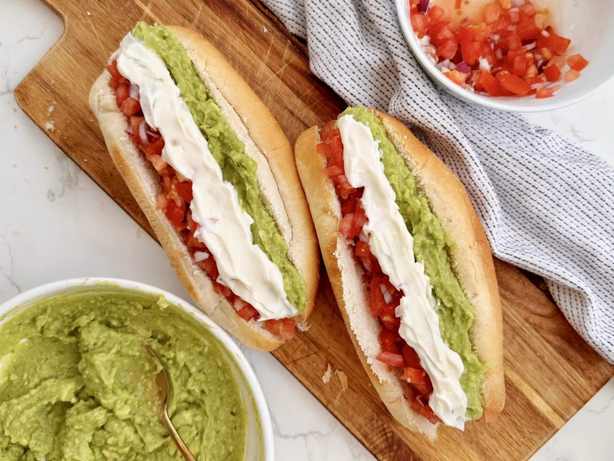

Completos (Chilean Hot Dogs)

There is a lot of discourse online about many stupid and useless things. Hot-dog styles being one of it. Americans have a tendency to just stay in their own country when talking about it, defending their ultra-niche regional styles that, sometimes, end up being so similar with the only difference being if they use onion or not...
Around the world, hot-dogs take so many different forms and flavor profiles that it's almost imposible to put them in the same category. One of them is humble chilean Completo, especially the one we call Italiano. Using the same colors as the italian flag, this worldwide famous street food is something that every chilean grew up eating, no matter your social status. This is one of the foods you must eat before you die because, even if it looks simple, its something that blows the mind of everyone who tries them!
Ingredients
- 6 hot dog buns (you can also use any kind of baggette-style bread to emulate the taste of chilean marraqueta)
- 9 hot dogs (go for natural casing for a better snap, vegan dogs are really good too!)
- 4 tomatoes, finely chopped and salted
- 4 medium ripe avocados, mashed until chunky with a fork in a bowl and lightly salted to taste
- 1 cup (200 gr) homemade or store-bought mayo
- (Optional) Chilean Ají Crema or any kind of hot sauce without a strong flavor profile
Instructions
- In the oven, lightly toast your buns so they are ready to use as soon as you have your hot dogs ready. You can set them aside in a basket with a clean cloth on top to keep them warm.
- In a pan, drizzle some oil and set the fire to medium-high, line up your hot dogs next. I recommend that you stab them with a fork a couple of times so they don't suddenly explode and burn your hands (trust me, this has happened to me too many times).
- Pan-fry them on both sides until golden brown. You gotta be careful though, as they can start to char really fast!
- As soon as the hot dogs are ready, cut the buns almost in half and start assembling in this order: hot dog, tomato, avocado and mayo. This is really important, because if you put the tomato on top of the tomato you will not only end up with a runny mess, you will also make every chilean person really, really mad.
- Enjoy them with your favorite drink or even some french fries, emulating the mythical 5 AM post-carrete munchies so typical of my home country.